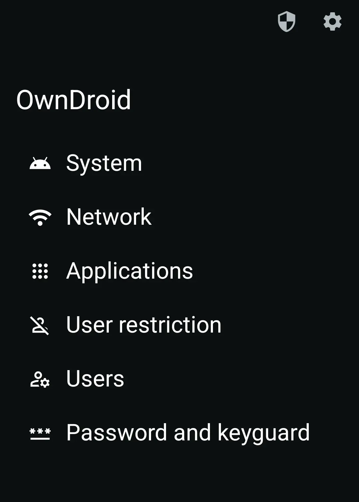

暑假把旧手机给娃当学习机，我是怎么用 OwnDroid 把它锁成一台纯学习设备的
旧 Android 手机闲置可惜，给孩子当学习机又怕乱装 App、USB 被偷数据、管控工具被卸载。这篇讲我怎么用 Device Owner 权限一步一步把它变成真正的纯学习设备。
六月底儿子考完期末，把他那台用了两年的 iPad 还我了——说是学校不让带去，要换一台能装钉钉、能上网课的"正经 Android 设备"。我翻抽屉翻出前年换下来的小米 9，刷了个纯净系统，装上网课 App、刷题 App、背单词 App，高高兴兴递给他。
结果只用了三天我就后悔了。
第一天他在钉钉直播间里点开了同学分享的 APK，装了一个叫"游戏助手"的东西，我下班回家发现后台在偷偷跑广告 SDK。第二天他从应用商店下了个浏览器，顺着搜索结果又装了三个小游戏，桌面上一溜图标。第三天更绝——他不知道从哪学的，把我装的家长控制 App 给卸载了，还一脸无辜地说"爸爸我没动过它自己就没了"。
我在办公室抓着手机发愁的时候，旁边工位的老张凑过来问我怎么了。老张是搞企业信息化的，手里一堆 kiosk 设备，对 Android 管控这块门儿清。听完我的抱怨他笑了："你用的那是普通家长控制，跟 Device Owner 管系统级的东西比，就像拿个弹弓去打坦克。试试 OwnDroid 吧，把手机设成 Device Owner，能管的东西比你想象的多得多。"
我第一次知道 Android 有个叫 Device Owner 的权限——不是普通 App 能拿到的那种权限，是系统级的"设备所有者"，可以在系统层面开关几乎所有东西。OwnDroid 就是专门把这套权限包装成了图形界面，让我这种不会写代码的人也能用——去它的官网扫了一眼，功能列表里 Device Owner 权限能做的事几乎都覆盖到了。
先从下载拿 OwnDroid 安装包装到备用 Android 手机上。
激活 Device Owner：把手机"登记"成我的设备
OwnDroid 的原理其实不复杂：手机开机时通过 NFC、二维码或者 ADB 命令触发 Device Owner 设置，一旦设好，整个系统就认你是这个设备的"主人"了——以后装什么 App、卸什么 App、USB 能不能传数据、音量能不能开，全听 OwnDroid 的。
激活的过程比我想象的简单。先把手机恢复出厂，开机引导到"欢迎使用"那一步时，用另一台手机扫 OwnDroid 里生成的二维码，等它自动走完设置流程，重启一次，Device Owner 就生效了。OwnDroid 图标上多了一个小盾牌，告诉我现在它已经是系统级应用了。
那一刻我突然有种奇怪的感觉——这台手机不再是儿子随便折腾的玩具了，它成了一台"被托管"的设备，而托管者是我。
第一步先把漏洞补上：USB 禁用 + 阻止卸载
老张跟我说，拿到 Device Owner 权限后第一件事就是补漏洞，不然之前那堆问题换个方式还会来。
我在 OwnDroid 的"系统"板块找到了"禁用 USB 信号"开关，打开它。这个开关很有意思——它不是不让手机充电，而是硬件级切断 USB 的数据信号。也就是说，插电脑上还能充电，但电脑完全读不到手机里的东西；U盘插上去也读不出来，任何通过 USB 数据通道想偷数据或者植入恶意程序的东西，一律被挡在外面。BadUSB？Rubber Ducky？这些当年在 K 上看到过的攻击手段，在这台手机上现在是物理级不可能了。
然后是"阻止卸载"。之前家长控制 App 被卸载就是因为没有这个——普通 App 卸载只需长按图标拖到垃圾桶。现在不同了，我在 OwnDroid 的"应用"板块把 OwnDroid 自己、还有我装的钉钉、网课 App、背单词 App 全部勾上了"阻止卸载"。勾完之后我试了试：长按图标拖到垃圾桶，系统提示"此应用无法卸载"；进系统设置找卸载按钮，灰色的点不动；连 ADB 命令都不行——Device Owner 的 setUninstallBlocked() API 是在系统层拦截的，任何渠道的卸载都被挡了。

全局静音：上课不会再响了
老张还告诉我一个场景：之前他带团队做 kiosk 项目，客户反馈最大的问题就是"设备突然响起来很尴尬"。OwnDroid 有个"全局静音"功能，和手机自带的 Do Not Disturb 完全不是一回事。
Do Not Disturb 只管应用通知，按音量加就能恢复；全局静音是系统级拦截所有音频输出通道——闹钟、通话铃声、App 提示音、视频外放，全部被静音。而且关键的是，普通用户操作无效——你按音量键没用，进设置调没用，只有在 OwnDroid 里关掉开关才能恢复。
我把它设成了自动规则：每天早上 8 点到下午 5 点，全局静音开启。这样儿子上课期间不管他怎么操作，手机绝对不会出一声。晚上 5 点之后自动恢复音量，他和同学语音、看视频都没问题。
远程清除存储：一键重置被他装坏的 App
第二个星期又出事了——儿子在钉钉直播间里装的那个"游戏助手"又偷偷跑起来了，而且这次它藏得更深，我找了半天才找到。老张说别急，OwnDroid 有个 clearApplicationUserData() API，可以不进应用、不弹确认、直接清空任何应用的所有数据。
我试了一下：找到那个"游戏助手"，点"清除存储"按钮，两秒钟后它就回到了刚安装完的初始状态——所有数据被清空，后台进程被杀干净。更狠的是，这个操作只有 Device Owner 能做，App 自己完全无法阻止。我把这个功能用到了极致：每天晚上写作业时间结束后，我会远程一键清除钉钉之外所有社交和娱乐 App 的存储，第二天早上儿子拿到手机时，钉钉还在，但游戏、社交都得重新登录——足够劝退大半。
OwnDroid 自己也隐藏了
我发现 OwnDroid 图标的存在本身就是个问题——儿子时不时就会点开看看，虽然他改不了什么（Device Owner 的管控没有二次确认是关不掉的），但总觉得别扭。后来去OwnDroid文档翻了一下，v8.3 之后新增了一个功能：OwnDroid 可以把自己从启动器隐藏。
隐藏之后启动器上真的找不到它了——没有图标，搜也搜不到。但怎么恢复呢？我提前设好了 API Key，用 adb 发一个广播命令就能把图标找回来；或者系统设置里强制停止 OwnDroid 再重开，它自己就会恢复。老张说还有个更简单的办法：在 OwnDroid 激活之前先备份 API Key，隐藏了之后真忘了也不怕，发个广播就搞定。
配置导出：一台配好，全家都能用
八月底我表弟来找我，说他也想把旧手机改成学习机。我本来准备教他从头走一遍 OwnDroid 的设置流程，老张说用托管配置导出就行——v7.3 之后 OwnDroid 支持把所有配置导出成 JSON 文件。
我打开 OwnDroid 的"设置 → 托管配置 → 导出"，几秒钟生成了一个 JSON，里面包含了应用分组、USB 禁用、全局静音时间表、所有 App 的阻止卸载状态、甚至 OwnDroid 自己的 API Key（导出时可以选要不要包含密钥）。表弟在自己的手机上激活 Device Owner 后，导入这个 JSON，所有配置立即生效——他的手机瞬间变成了和我这台一模一样的"学习机"。
20 台 kiosk 设备批量部署就是这个思路：一台手动配好，导出 JSON，其他 19 台导入，十几分钟搞定。我现在的做法是每月导出一次当备份，万一 OwnDroid 升级或者换手机，导入就能恢复所有设置。
收尾：一台被托管的设备意味着什么
暑假结束，儿子开学了。这两个月那台小米 9 没出任何岔子——没有乱七八糟的 APK，没有管控 App 被卸载，没有上课突然响。我之前想的最多的是"怎么防着他"，现在想的更多的是"OwnDroid 到底给了我什么"。
它给的不是"管孩子"的权力，而是一种"这台设备我有绝对控制权"的安全感。USB 禁用防止数据泄露，阻止卸载防止被绕过，全局静音防止干扰，托管配置让批量管理变得简单——这些都是 Device Owner 权限才能做到的事，普通家长控制 App 再怎么刷广告、再怎么吹"专业"，拿到的权限级别就不对。
老张说企业客户用 OwnDroid 更多是 kiosk 和设备管理，而我这种场景算是家庭版用法。其实核心逻辑是一样的：当你需要一台设备"老老实实干一件事、别乱跑、别被人搞破坏"的时候，Device Owner 就是最靠谱的路，而 OwnDroid 是把这条路铺得最平坦的那一个。
我让表弟把那台 JSON 备份也发了份给我，存在网盘里。说不定哪天这台小米 9 也老了，换一台新的，OwnDroid 导入一下就能继续用——这可能是我今年花最值的时间了。手头整理的 OwnDroid 资料和配置模板顺手备份在了GitHub、Gitee和GitCode三个仓库上，国内外源都能访问，免得哪天临时找不着。